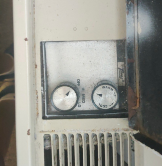

overview
For this project, I redesigned an AC unit’s interface to make it more accessible for the visually impaired,
with the intention that doing this would make it more accessible for all.
After identifying flaws in the original design (shown on the right), such as misleading affordances or lack of
feedforward, I went through a design process that consisted of brainstorming sessions followed by multiple
iterations through critique. Below are some sketches of the process.
I utilized foam core to prototype and test many of my ideas until reaching a final design.
By integrating the fan and temperature controls into one location but separating their interactions
into a button press vs. a dial, the final prototype is accessible even in low-vision scenarios, such
as in the dark.
Highlighted fan and temperature setting displays as well as auditory and haptic feedback supplement
this accessibility. You can see a demo of the prototype below.
Note: the low contrast between the temperature arrow and gauge is an oversight that I was unable to fix with the interest of time